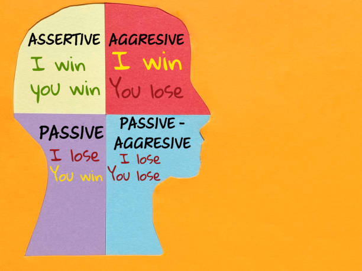
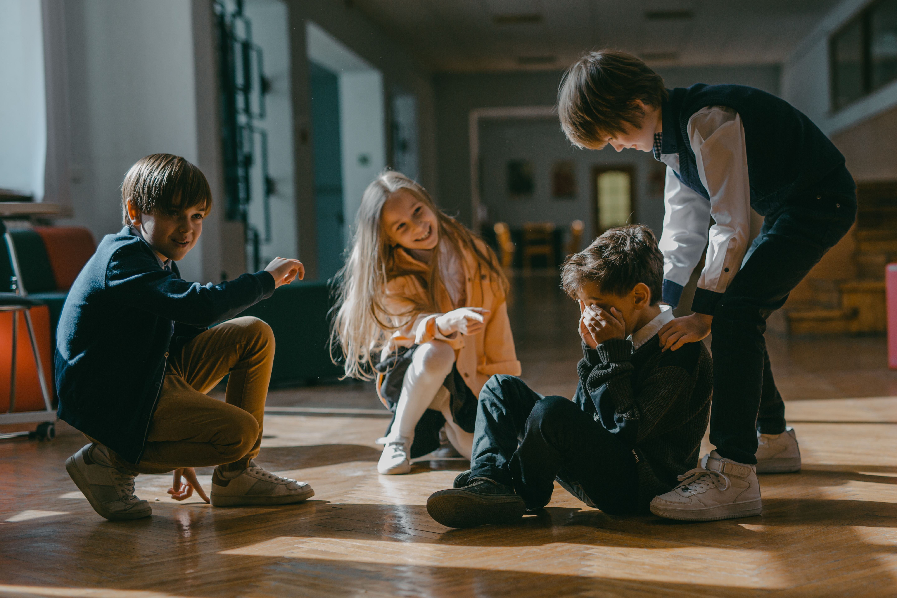
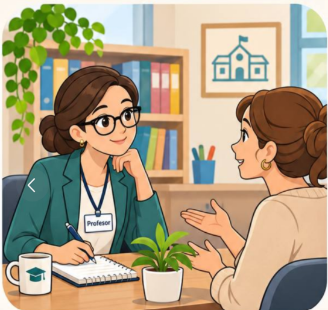
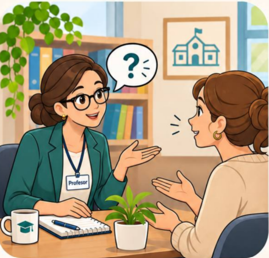
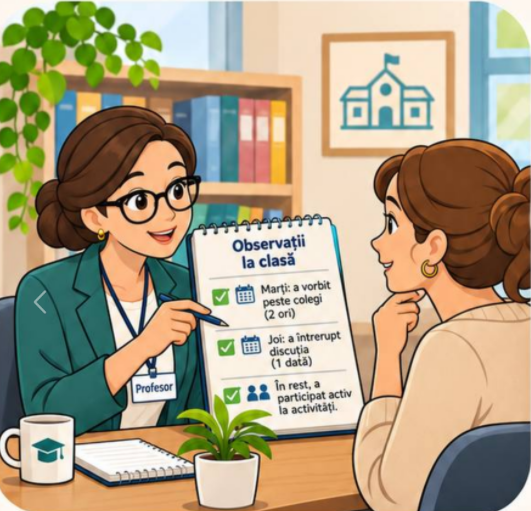
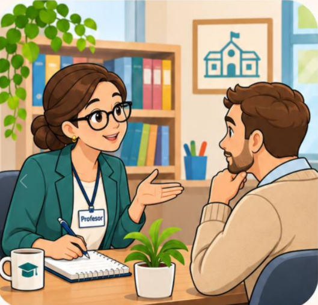
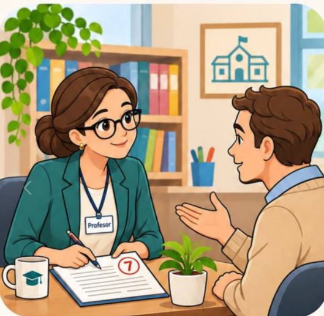
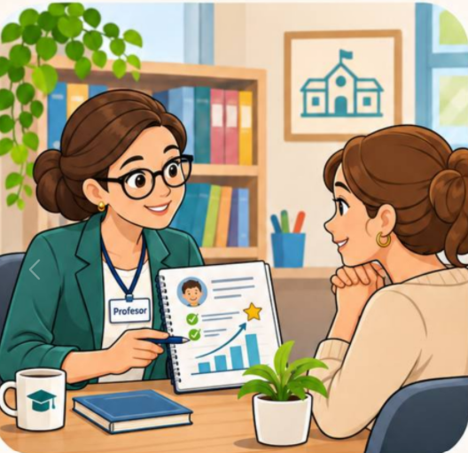
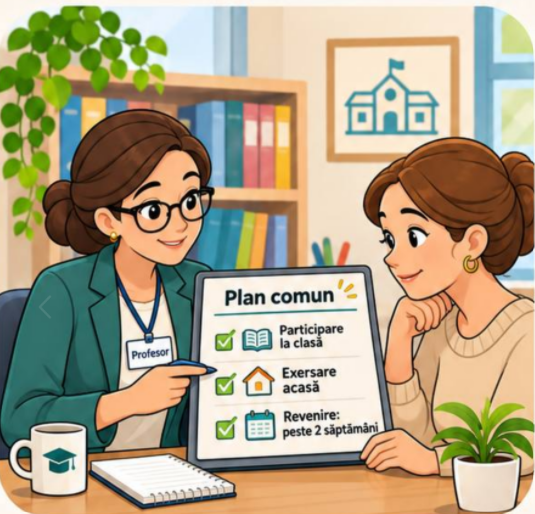
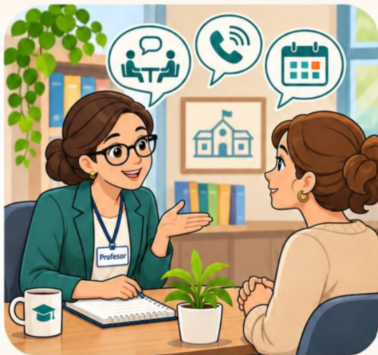

Despre EduComunicare
EduComunicare este o platformă educațională dedicată promovării comunicării asertive și dezvoltării relațiilor constructive dintre cadrul didactic și părinte, având drept scop prevenirea și diminuarea situațiilor conflictuale din mediul educațional.
Comunicarea reprezintă fundamentul unui parteneriat educațional eficient. Relația dintre cadrul didactic și părinte presupune colaborare, încredere reciprocă, respect și responsabilitate comună pentru dezvoltarea armonioasă și succesul educațional al copilului. Atunci când dialogul este deficitar, apar neînțelegeri, tensiuni și conflicte care pot afecta climatul educațional și calitatea colaborării școală–familie.

Obiective
- Promovarea comunicării asertive în mediul educațional
- Consolidarea parteneriatului dintre cadrul didactic și părinte
- Prevenirea și diminuarea situațiilor conflictuale
- Dezvoltarea ascultării active și a empatiei
- Încurajarea dialogului deschis și a exprimării respectuoase
Cui se adresează?
Platforma se adresează managerilor instituțiilor de învățământ, cadrelor didactice, diriginților, specialiștilor din domeniul educației și părinților interesați de îmbunătățirea comunicării și consolidarea relației școală–familie.
Strategii manageriale de comunicare asertivă dintre cadrele didactice și părinți în diminuarea conflictelor școlare
În cadrul relației școală–familie, un conflict poate porni de la interpretarea diferită a aceleiași situații. Un cadru didactic poate urmări respectarea regulilor clasei, în timp ce un părinte poate fi preocupat, în primul rând, de modul în care copilul său este înțeles și sprijinit. Dacă opiniile sunt exprimate prin acuzații, întreruperi sau generalizări, dialogul se poate transforma rapid într-o confruntare. Din acest motiv, proiectul acordă importanță atât felului în care este formulat mesajul, cât și disponibilității de a asculta punctul de vedere al celuilalt.
Explorează toate conceptele
Comunicare asertivă
Stil de comunicare în care persoana își exprimă clar și respectuos opiniile, nevoile și sentimentele, fără agresivitate și fără pasivitate, respectând și drepturile interlocutorului..
Citește mai mult.jpg)
Ascultare activă
Atenție reală acordată interlocutorului, prin care se clarifică și se confirmă mesajul (parafrazare, întrebări de clarificare, feedback).
Citește mai mult
Conflict școlar
D ezacord sau tensiune între actorii educaționali (cadre didactice, părinți, elevi), generat de interese, așteptări sau percepții diferite.
Citește mai mult
Parteneriat școală-familie
Parteneriat școală–familie: colaborare bazată pe încredere, responsabilitate comună și comunicare deschisă între cadrele didactice și părinți, în interesul elevului.
Citește mai multStrategie manageriala
Ansamblu de acțiuni planificate prin care conducerea instituției atinge un obiectiv, aici prevenirea și soluționarea conflictelor prin comunicare.
Citește mai mult
Mediere / soluționare a conflictelor
Proces prin care părțile ajung la o soluție acceptabilă pentru ambele, cu sprijinul unei terțe persoane neutre sau al unor pași stabiliți.
Citește mai mult
Resursă educațională digitală
Material de informare și formare în format electronic, accesibil online, aici site-ul web ca produs final.
Citește mai multDe ce contează comunicarea asertivă în relația școală–familie

-
Codul educației al Republicii Moldova nr. 152 din 17 iulie 2014
-
Codul de etică al cadrului didactic, aprobat prin Ordinul Ministerului Educației nr. 861 din 7 septembrie 2015
-
Regulamentul-cadru de organizare și funcționare a instituțiilor de învățământ primar și secundar, ciclul I și II, aprobat prin Ordinul MEC nr. 253 din 12 februarie 2026
-
Standardele de competență profesională ale cadrelor didactice, aprobate prin Ordinul MEC nr. 1657 din 22 septembrie 2025
Cartonașe pentru o comunicare asertivă
Un set de cartonașe practice pentru relația profesor–părinte. Apasă pe un cartonaș pentru a afla ce înseamnă tehnica respectivă și cum arată într-o discuție reală.
Ascultarea activă
Apasă pentru a întoarce ↻Ce înseamnă?
Profesorul îi oferă părintelui timp să explice situația, nu îl întrerupe, pune întrebări de clarificare și verifică dacă a înțeles corect mesajul.
Exemplu
„Înțeleg. Ca să pot înțelege mai bine, îmi puteți spune ce ați observat acasă?”

Întrebările deschise și neutre
Apasă pentru a întoarce ↻Ce înseamnă?
Întrebările încep cu «Ce?», «Cum?» sau «În ce situații?» și încurajează relatarea faptelor. Sunt evitate reproșurile și întrebarea «De ce?» folosită acuztor.
Exemplu
„Ce dificultăți întâmpinați atunci când îl ajutați la teme?"

Descrierea faptelor fără etichete
Apasă pentru a întoarce ↻Ce înseamnă?
Profesorul comunică observații specifice și verificabile, nu judecăți generale. Astfel, discuția se concentrează pe situație și pe soluții.
Exemplu
„În această săptămână a vorbit de câteva ori peste colegi. Aș vrea să vedem cum îl putem ajuta."

Mesajul la persoana 1
Apasă pentru a întoarce ↻Ce înseamnă?
Cadrul didactic își exprimă clar observația și preocuparea, fără a atribui intenții negative părintelui. Mesajul rămâne ferm si respectuos.
Exemplu
„Observ că temele sunt adesea incomplete și mă preocupă acest lucru. Vă propun să stabilim împreună un mod de sprijin."

Empatia și validarea emoțiilor
Apasă pentru a întoarce ↻Ce înseamnă?
Profesorul recunoaște emoțiile părintelui și menține un cadru calm de dialog, fără a amplifica tensiunea.
Exemplu
„Înțeleg că această notă v-a nemulțumit. Haideți să analizăm împreună lucrarea și criteriile de evaluare."

Feedbackul constructiv și pozitiv
Apasă pentru a întoarce ↻Ce înseamnă?
Feedbackul pornește de la progrese și comportamente concrete, clarifică dificultatea și propune o acțiune realizabilă.
Exemplu
„Am observat că participă mai mult la ore. Mai are dificultăți la citire; putem exersa zilnic câte 10 minute." itatilor

Negocierea soluțiilor și asumarea responsabilităților
Apasă pentru a întoarce ↻Ce înseamnă?
Părintele este implicat în identificarea opțiunilor, iar profesorul propune pași concreți, responsabili și un moment de revenire asupra rezultatelor.
Exemplu
„Ce credeți că ar funcționa acasă? Eu pot urmări participarea la clasă; putem discuta din nou peste două săptămâni."

Comunicarea bidirecțională și adaptată familiei
Apasă pentru a întoarce ↻Ce înseamnă?
Mesajele către părinți sunt clare și accesibile, iar profesorul ține cont de timpul, nevoile și posibilitățile familiei.
Exemplu
„Ce credeți că ar funcționa acasă? Eu pot urmări participarea la clasă; putem discuta din nou peste două săptămâni."
